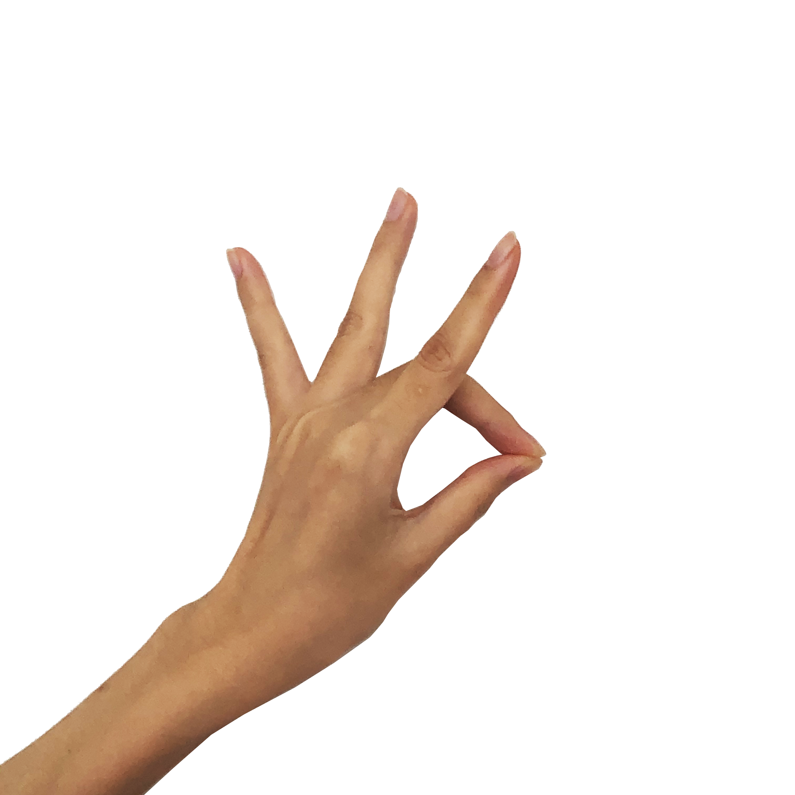
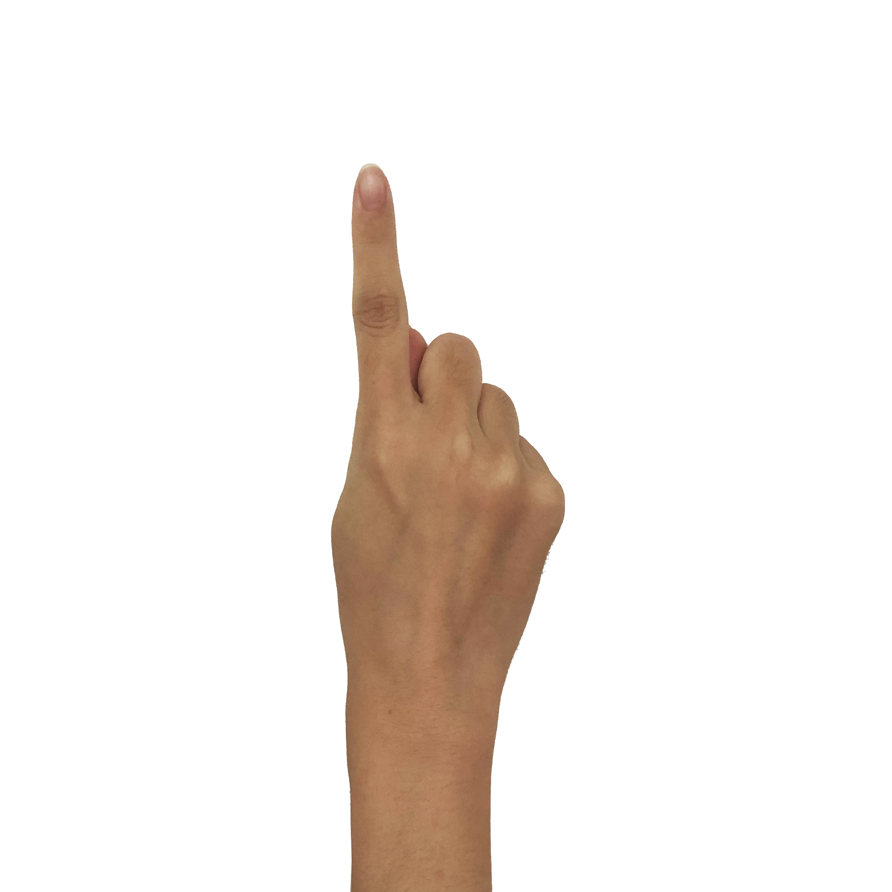
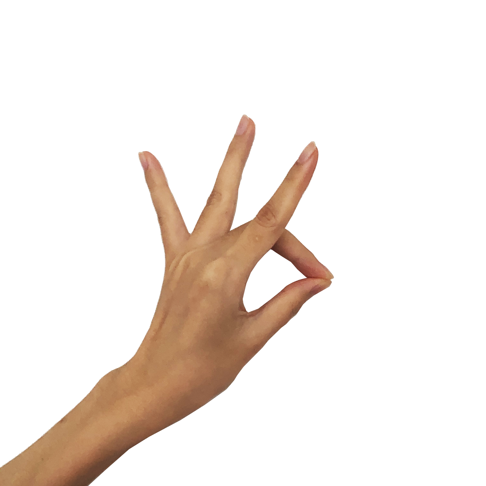
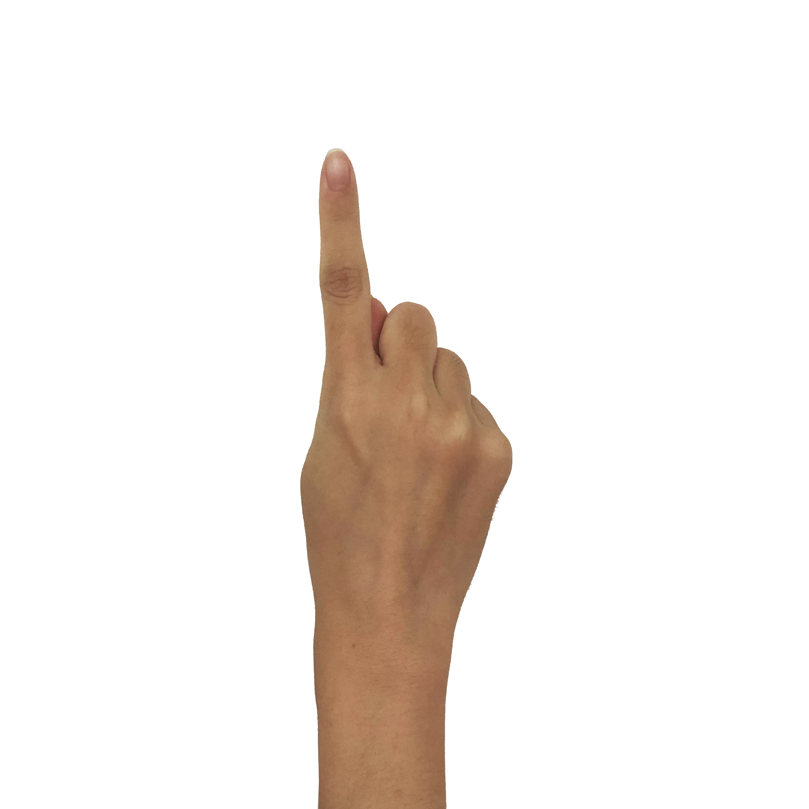
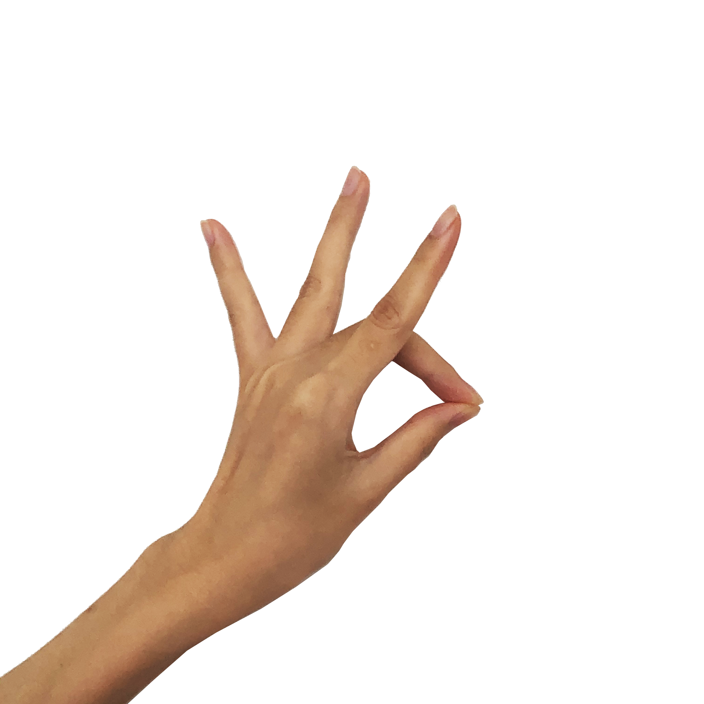
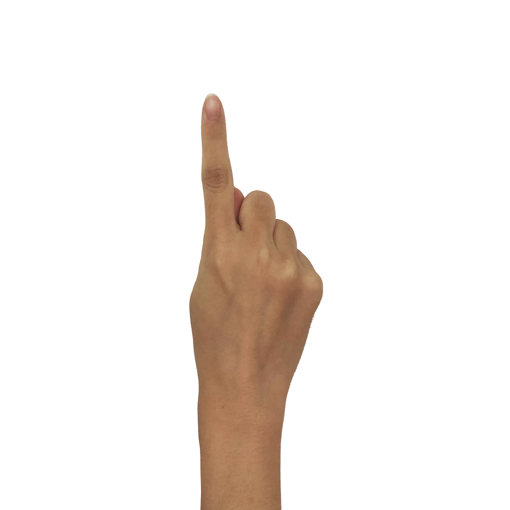

gestures
creation and performance by: Anna Borou Yu, Jiajian Min, Michaella Moon, Sara Constant
website by: Michaella Moon
Remember Me Otherwise is an interactive web installation based on body memory. In this installation, layers of video and audio recall childhood memories, each of which is encapsulated
by a single hand gesture. As audiences interact with the videos, a pose estimation AI program tracks their own hand movements via the computer webcam, allowing them to use similar gestures to control the playback and mix.
As an interactive take on digital-musical collage, this work interrogates how disparate, cultu\rally-specific memories are tied together by the habitual motions of the body. This successive series of mistranslations (the internalized motions depicted on screen, the imperfect ways in which the AI has ‘learned’ these gestures, and the still more imperfect ways that the audience is taught to approximate them) also speaks to the impossibility of recreating the past—and the visceral ways that memories can slip in and out of one another, just beyond our grasp...
With one hand, use the following gestures to trigger video playback. Holding a gesture alters the blend of visuals and audio over time.
The gestures are grouped in pairs; moving between paired gestures alters the balance between two layers of video and audio.
Try the following gestures to interact with the installation:
high five: hold all fingers up, as if demonstrating the number 5.
hand down: flip your hand down, so that the back of your hand faces the computer and all fingers are pointing down.
fist: close your hand as if gripping an object tightly.
pinkie up: make a fist, and lift up only your pinkie finger.
point: make a fist, and lift up only your index finger, as if pointing to the sky.
middle finger down: touch your thumb and middle finger, so that your index, ring and pinkie finger are all pointing up.


gestures
loading hand detection model...